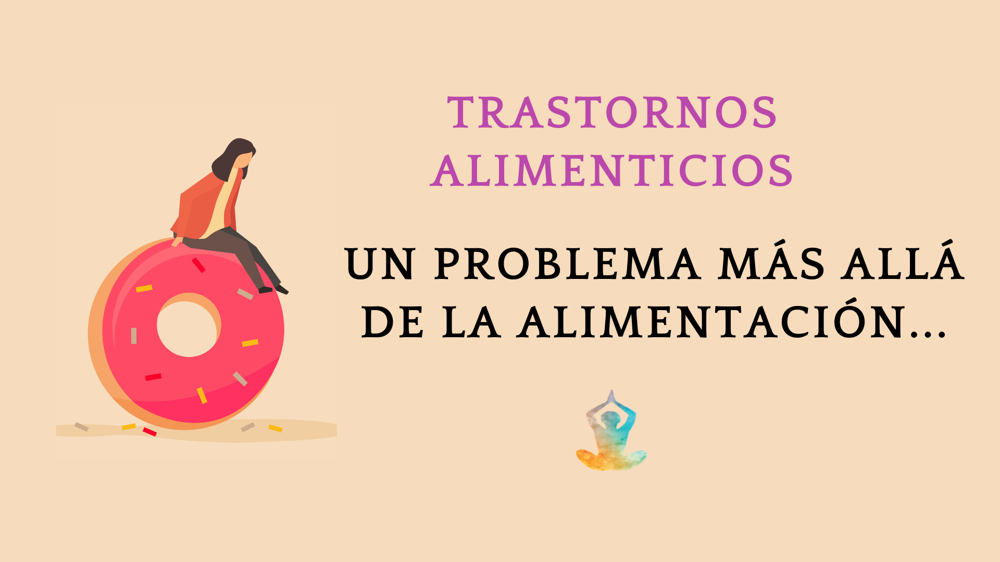

Introducción
Hoy día sabemos que los trastornos alimenticios son una grave
enfermedad de origen psicológico que se ve caracterizada por la
inapetencia y el rechazo hacía los alimentos, ya sea de manera
abrupta y hacia ciertos alimentos o hacia todo tipo de comida,
privándose totalmente de esta o devolviendo el estómago cada que se
terminare de ingerir cualquier tipo de alimento.
Esta ha sido una de las grandes enfermedades a nivel mundial del
siglo XX, más, sin embargo, esta enfermedad ha estado con nosotros
desde muy atrás en el tiempo, pero no se la había dado la
importancia adecuada, ni se conocían bien sus razones ni sus
antecedentes.

Esta enfermedad, los trastornos alimenticios son de padecimiento
crónico y progresivo, que, aunque su principal forma de
manifestación es a través de la forma de alimentarnos, en realidad
consiste en una rama muy amplia y compleja de síntomas y razones,
entre los que se ve de manera predominante una alteración o
distorsión de la propia imagen corporal (autoimagen), un gran miedo
a el hecho de subir de peso y la adquisición de una seria de valores
a través de una imagen corporal.

¿Qué es un trastorno alimenticio?
Ya desde los tiempos antiguos de la humanidad, el alimento ha sido
imprescindible para el desarrollo de la vida del ser humano y no
solo porque la alimentación es una de las necesidades básicas de
todo ser vivo, sino también porque está estrechamente ligada a sus
orígenes, costumbres, tradiciones y su forma de vida. Existe un
término llamado "conducta alimentaria" que hace referencia al
comportamiento o reacción de una persona frente a los alimentos. A
través de la historia diferentes acontecimientos han desviado esta
conducta determinando trastornos, como, por ejemplo, los períodos de
hambruna que ha vivido el ser humano.

Los trastornos alimenticios que se dan con más frecuencia en la
actualidad son los dos grandes monstruos de la anorexia y la
bulimia; ambas enfermedades psiquiátricas con complicaciones que
afectan de manera física, alterando el estado normal del cuerpo,
poniendo de esta manera la salud física y mental de la persona que
la padece. En nuestros tiempos estos dos padecimientos son las
causantes de la mayoría de las muertes de jóvenes que oscilan de los
17 a los 22 años de edad. Los trastornos de la alimentación son una
enfermedad que es causante de grandes perturbaciones en su dieta
diaria, tales como ingerir cantidades muy pequeñas o comer en
exceso, o incluso amenorado notoriamente las cantidades de comida en
las comidas de desayuno, almuerzo y cena.
¿Cúales son las causas principales de este trastorno?
Uno de los principales factores que originan estos trastornos de
alimentación son los tan afamados medios de comunicación, que, sin
pensar en la salud, solo adornan la realidad y las personas que son
propensas a padecerlas caen en ello muy fácilmente, esta a su vez se
contradice a si misma ya que promueve el consumo casi exagerado de
alimento y por otro laso nos muestra una imagen de la persona
perfecta (físicamente).

Estos trastornos alimenticios no tienen una causa específica, pero
si tiene diferentes y variados factores que en su conjunto y con el
paso del tiempo llevan a su inminente desarrollo.
Causas más frecuentes según estudios de salúd pública
| Factores sociales |
Los medios de comunicación en su mayoría de tiempo
se asocia lo bueno con la belleza física y lo que es malo con
las imperfecciones. Ejemplo de ello son referencia acerca de las
personas populares que son admiradas por la gente por tener un
"cuerpo perfecto" o lo bonito.
|
La Presión social por otro lado, es mayor sobre
todo hacia la mujer que para el hombre. La idealización
medíatica de los cuerpos estibilizados son un factor muy
importante.
|
Las presiones culturales le dan un valor añadido a
estar delgado, los cánones de belleza tanto para mujeres como
para hombres en cuanto a pesos y formas especificas del cuerpo.
|
| Factores psicológicos |
Estas personas tienden a padecer estos trastornos cuando tienen
expectativas no realistas sobre ellos mismo y de las personas
que lo rodean.
|
Inclusive las personas con éxito en sus vidas se sienten
incapaces, inservibles, que su identidad carece de todo sentido.
|
Esto se debe por mayormente problemas de una baja autoestima,
sentimientos de insuficiencia del control de su vida, depresión,
ansiedad, enojo, etc.
|
| Factores interpersonales |
Hay casos en los que esas personas que desarrollan los
trastornos alimenticios viven o cuentan con familias que son
sobreprotectoras, muy inflexibles e ineficaces para resolver
problemas, en muchas ocasiones no demuestran sus sentimientos y
tienen grandes expectativas de éxito.
|
Los niños son educados de tal manera que aprenden a no demostrar
sus sentimientos, ansiedades o dudas.
|
Puede ocasionarse circunstancias como: haber sufrido burlas por
su apariencia física, no poder expresar sentimientos, historial
de abuso físico o sexual, relaciones interpersonales y
familiares problemáticas.
|
Otros factores no frecuentes pero encontrados fueron los factores
genéticos: Si una persona tiene antecedentes familiares de un
trastorno de la alimentación, existe una alta probabilidad de que
dicha persona también desarrolle un trastorno similar.
Tambien los factores físicos, existen varias causas físicas que
pueden contribuir al desarrollo de un trastorno de la alimentación.
Las investigaciones han concluido que cuando el hipotálamo de una
persona no funciona correctamente, es posible que aparezcan ciertos
trastornos de la alimentación, tales como la sobrealimentación
compulsiva.
¿Cúales son las consecuencias a futuro acerca de este problema?
Los trastornos alimenticios, al días de hoy aún no se toma demasiado
en importancia, son condiciones serias que potencialmente ponen la
vida en peligro y afectan la salud física y emocional de la persona.
Los trastornos alimenticios no son solamente una “moda” o una
“fase”, como la gente ha llegado a pensar.
Son condiciones reales, complejas y devastadoras que pueden tener
consecuencias en la salud, productividad y relaciones. Las personas
que sufren de un trastorno alimenticio necesitan ayuda profesional.
El tratamiento temprano aumenta las probabilidades de recuperación
física y emocional.
Algunas de estas consecuencias más frecuentes son:
Anorexia Nerviosa
En el ciclo de auto-inanición de la anorexia nerviosa, el cuerpo es
negado de los nutrientes esenciales que necesita para un
funcionamiento adecuado. Por lo tanto, el cuerpo es forzado a
disminuir todos sus procesos para conservar energía, resultando en
consecuencias médicas muy serias.
Tiene consecuencias como disminución anormal en la frecuencia
cardíaca y la presión arterial, indicando que el músculo cardíaco
está debilitado. Reducción en la densidad de los huesos
(osteoporosis) que resulta en huesos débiles y frágiles. Pérdida de
músculo y debilidad muscular. Deshidratación severa que puede
resultar en falla renal. Sensación de desmayo, fatiga y debilidad
general. Cabello y piel secas; la pérdida de cabello es común.
Bulimía Nerviosa
Los ciclos recurrentes de atracones y purgaciones de la bulimia
pueden afectar todo el sistema digestivo y llevar a un desbalance
químico y electrolítico en el cuerpo que puede afectar las funciones
del corazón y otros órganos principales.
Algunas de las consecuencias médicas de la bulimia incluyen
desbalance electrolítico que puede llevar a latidos cardíacos
irregulares y posible falla cardíaca y muerte. Esto es causado por
deshidratación y pérdida de potasio, sodio y cloro por parte del
cuerpo por resultado de Rupturas gástricas, inflamación y posible
ruptura del esófago debido al vómito frecuente. Caries dentales y
destrucción de los dientes debido al contacto con los ácidos
estomacales durante el vómito. Úlceras pépticas y pancreatitis.
Trastorno alimentario convulsivo
El trastorno por atracón usualmente resulta en muchas de las
complicaciones médicas asociadas con la obesidad clínica. Algunas de
las consecuencias médicas potenciales del trastorno por atracón
incluyen: presión arterial en el corazón. Niveles altos de
colesterol como enfermedades cardíacas como resultado de los niveles
elevados de triglicéridos y la diabétes mellitus tipo II, entre
otras cuestiones.
¿Quienes somos y qué hacemos?
Somos un grupo de apoyo emocional que viene trabajando con hombres y
mujeres con enfermedades derivados a los trastornos alimenticios
desde hace más de 25 años. SaveYourBody cuenta con personas
voluntarias y expertos en la materia de alimentación, nutrición y
psicología en la buqueda la victima de esta terrible enfermedad sea
tratada a tiempo, ayudandola a buscar una esperanza de vida no solo
fisicamente, también espiritualmente.
Utliza cualquiera de nuestras redes sociales para seguirnos
También puedes contactarnos a través de los siguientes números con un solo clic